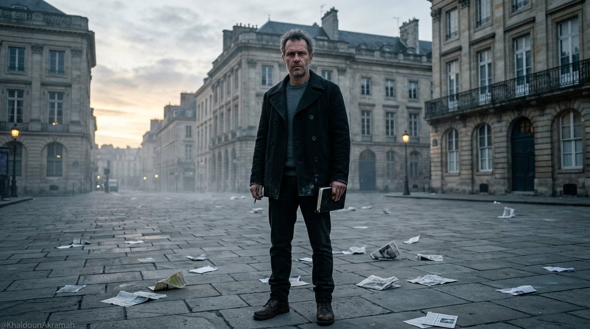
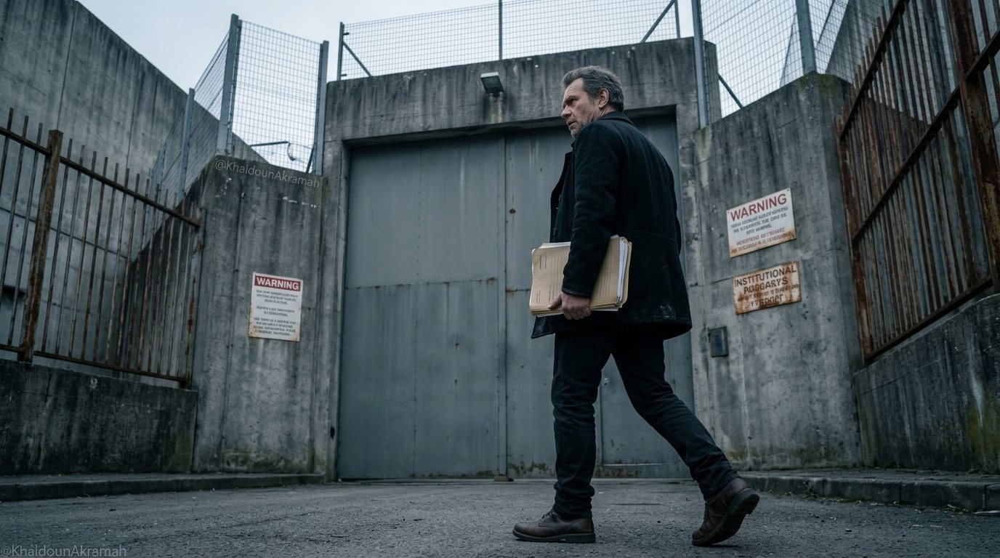
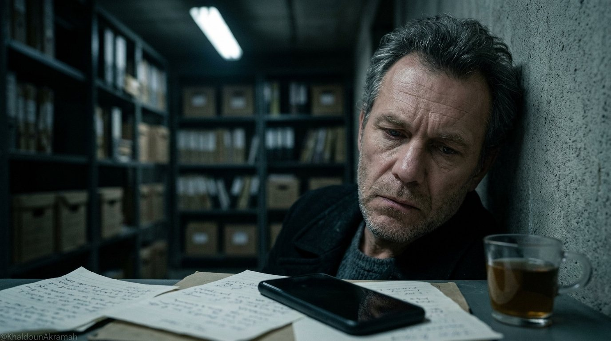
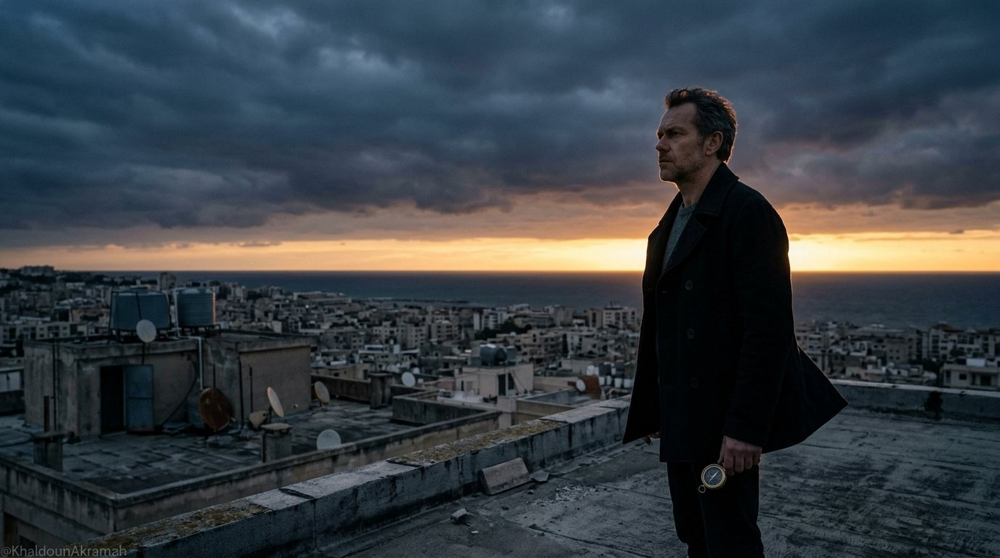
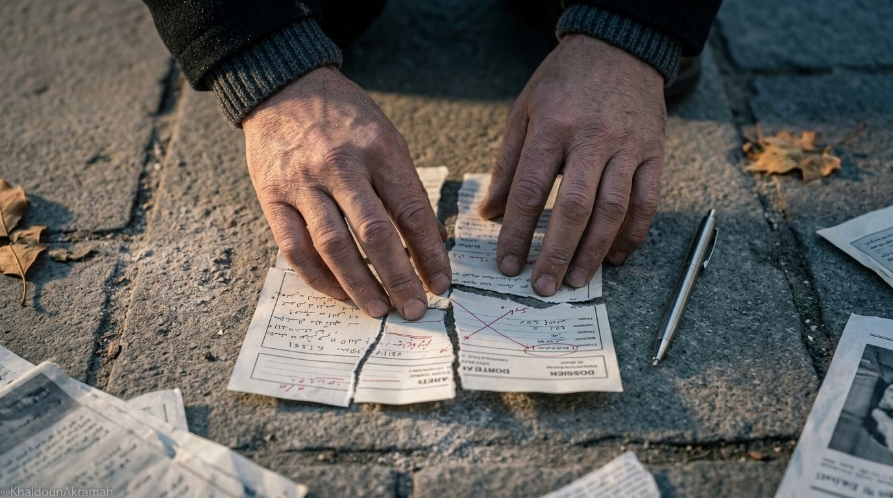
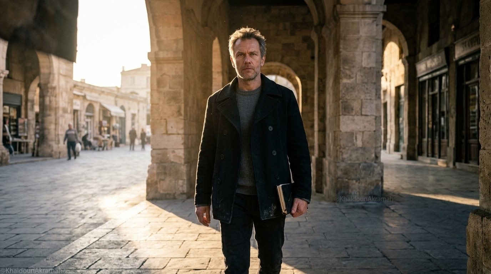

الانكسار في جولة لا يعني نهاية الحرب. الاعتراف الصادق بالتعثر هو أول دروب الشجاعة، والروح التي لم تُهزم من الداخل تملك مفاتيح الغد.

لم يكن الدخول إلى المعركة نزهة، بل كان خياراً واعياً لمواجهة الزيف بكل ما نملك.
حين تبدأ المواجهة، لا تكون الحسابات مجرد أرقام، بل إرادة تصطدم بواقع متكلس. خطونا الخطوة الأولى ونحن ندرك حجم الخلل في موازين القوة، لكن الواجب المدني والأخلاقي كان يفرض الوقوف لا التراجع.
كان الهواء مشحوناً بالترقب، وخطوط الصراع واضحة بين صوت يريد كشف الحقيقة وجدار أصم يحاول خنق كل بادرة وعي.

السقوط حقيقة واقعة لا يجوز تجميلها بالأوهام أو الشعارات الزائفة. خسرنا هذه الجولة الميدانية، ودفعنا ثمن الحسابات غير المكتملة، وكان الألم حقيقياً في الملامح والأعماق.
إنكار الهزيمة يكررها، أما تسمية الفشل باسمه الصريح فهي الخطوة الفاصلة بين الوهم والبداية الحقيقية.
سقطت الخطة ولم يسقط الهدف، تعثرت الوسيلة وبقيت القضية نقية كما كانت في يومها الأول.
قراءة متأنية في المسار الذي قاد إلى هذا المفترق، وكيف استجاب كل طرف لحركة الميدان:
طرح المطلب المدني وتثبيت الحقيقة أمام محاولات التزييف والحصار.
استعمال أدوات التعطيل والضغط الممنهج لإجهاض المحاولة في مهدها.
توقف المسار الميداني وتراجع القوة الدافعة مع بقاء الإرادة والصلابة الداخلية.

الركام لا يدفن الجمر الحي. الاستسلام قرار داخلي يتخذه المهزومون، ونحن لم نوقّع ولن نوقّع على صك التنازل.

النهوض بعد السقوط ليس عودة إلى الوراء، بل انطلاقة بوعي أعمق وتجربة أكثر صلابة.
نجمع الشتات، ونعيد ترتيب الأوراق، ونتعلم من كل ثغرة اخترقنا منها الخصم. القوة الحقيقية ليست في ألا تقع، بل في قدرتك على الوقوف كلما سقطت، ممسكاً بالأرض بثبات أشد.

المعركة مستمرة ما دام النبض حياً.
لن نبيع الوهم، ولن نخاف الاعتراف بالهزائم التكتيكية، لأن غايتنا النهائية أكبر من جولة واحدة.
نقف اليوم على أرضية أصلب، نقرأ المشهد بلا عواطف عمياء، ونستعد لما هو قادم برباطة جأش وإيمان لا يتزعزع.